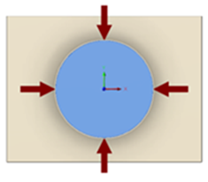

Probing the position of a boss
Deviation of the center point
1 - Deviation in X axis.
2 - Deviation in Y axis.
The acceptable value of deviation in position of the geometric feature.
This bilateral tolerance is the amount that the position of the geometric feature can vary from its nominal position and still be considered in tolerance. A geometric feature whose deviation is beyond this value is considered out of tolerance.
For example, when probing the location of a boss feature, the positional tolerance can be thought of as the allowable deviation in the X and Y of the center point of the feature.
 |
|
Probing the position of a boss |
Deviation of the center point |